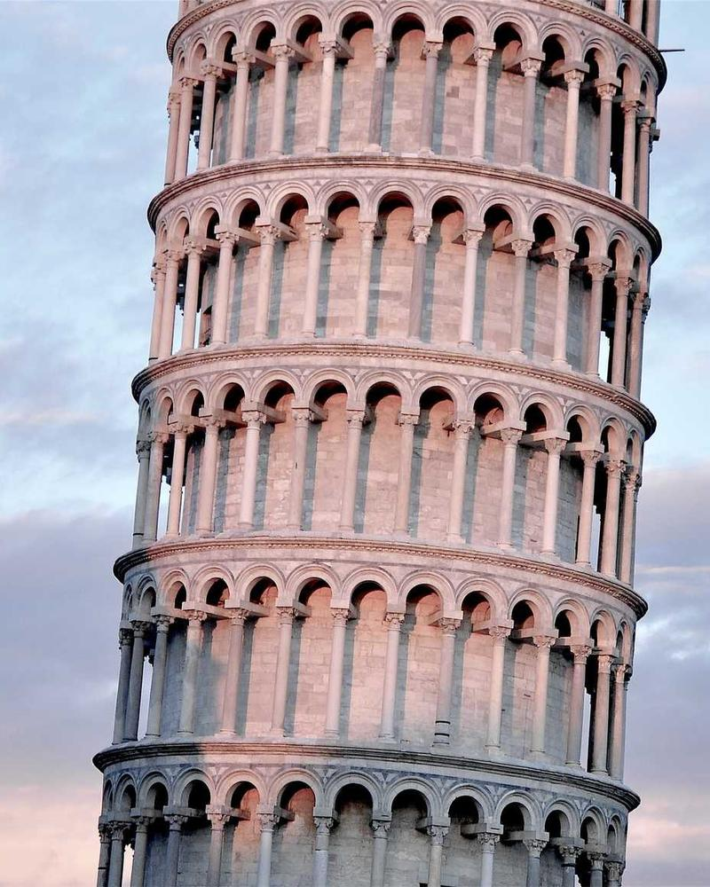
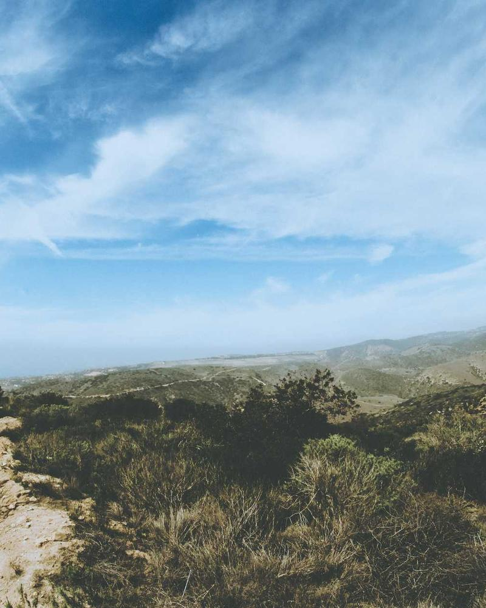

01
Architecture and Purity
Structural lines and geometric volumes inspired by monumental architecture
High Jewellery Collection
Where gemstones reveal the inspiration, craftsmanship and gouachés behind each exceptional creation. Le Choeur des Pierres orchestrates a symphony of precious stones, each singing its own story of nature, architecture, and the extraordinary savoir-faire of Cartier's master jewellers.
Thematic inspirations guiding the creation of each exceptional piece

Structural lines and geometric volumes inspired by monumental architecture
Bold interplay of shapes, light and shadow creating dynamic harmony
Nature's poetry translated into precious botanical and animal motifs

Cross-cultural conversations expressed through exceptional gemstones
Watercolour paintings that bring each jewel to life before it exists
Each creation in Le Choeur des Pierres emerges from the hands of Cartier's master jewellers, whose expertise has been refined over generations. From the precise calibration of each facet to the invisible setting that lets stones breathe, every gesture carries the weight of tradition and the courage of innovation.
The atelier becomes a stage where gemstones find their voice — selected not merely for their rarity, but for their ability to harmonize within a greater composition. Here, the gouaché meets the gemstone, and drawing becomes jewel.
A selection of masterpieces from Le Choeur des Pierres
Platinum, diamonds, sapphires, aquamarines
White gold, diamonds, emeralds, pearls
Platinum, diamond, pink sapphires
Book a private appointment to discover Le Choeur des Pierres in a Cartier boutique
Book Appointment